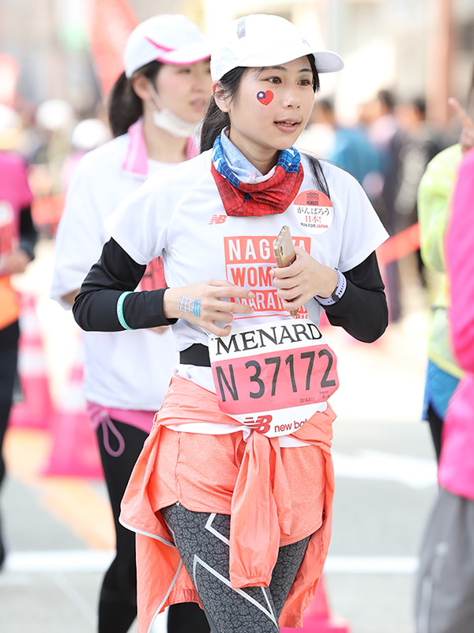

About

您好，我是君怡，從事網頁設計師的工作超過 10 年。
由於從小對於 "美"的執著，以及雙子座熱愛創意和跳躍思考的本質，毅然決然選擇了設計這條路。
我擅長各式視覺設計、網頁切版與動態特效，加上曾經短暫接觸過前端，如今切版常運用邏輯思維，做出有條理的網頁結構。
工作這些年來，同事與主管予以我的評價多為「做事細心有條理、具責任感」。因我重視自我要求與自我管理，不做浮誇的言論、極盡所能地將任務完成。
我的興趣為慢跑、聽音樂、旅遊、日語文學習；最享受的時刻就是邊喝咖啡邊放空了！至於工作閒暇之餘，我會研究與工作相關的知識或軟體，讓自己不要被這技術產業快速變遷的社會給淘汰。
如果想瞭解我這些年來的成果，請看我的作品集吧！
由於從小對於 "美"的執著，以及雙子座熱愛創意和跳躍思考的本質，毅然決然選擇了設計這條路。
我擅長各式視覺設計、網頁切版與動態特效，加上曾經短暫接觸過前端，如今切版常運用邏輯思維，做出有條理的網頁結構。
工作這些年來，同事與主管予以我的評價多為「做事細心有條理、具責任感」。因我重視自我要求與自我管理，不做浮誇的言論、極盡所能地將任務完成。
我的興趣為慢跑、聽音樂、旅遊、日語文學習；最享受的時刻就是邊喝咖啡邊放空了！至於工作閒暇之餘，我會研究與工作相關的知識或軟體，讓自己不要被這技術產業快速變遷的社會給淘汰。
如果想瞭解我這些年來的成果，請看我的作品集吧！
- 官君怡
- 宜蘭人
- 1984.05.29 出生
- 銘傳大學廣電系畢業
工作經驗
網頁設計師 ( 11 年 + )
其他小型企業 ( 2007.03 - 2010.8 )
遊戲業
- Game flier 遊戲新幹線 ( 2012.01 - 2014.09 )
代表專案：- 「芙蘭戰記」官網 ( 已停止營運 )
- 「朕是老大」遊戲登入大廳 ( 已停止營運 )
- Garena 台灣競舞娛樂 ( 2014.09 - 2017.03 )
代表專案：- 2015年「英雄聯盟決戰六福村」活動主視覺
- 2015年「英雄聯盟四週年慶」系列網頁
- 2015年「普羅聖誕祭典」主視覺 + LOGO
- 2015年及2016年，「英雄聯盟世界大賽」台灣官網
- 2016年普羅聖誕慶典水晶球概念圖設計 (實體展在信義威秀前)
- 2016年英雄聯盟x芬達異業合作
- Gravity 格雷維蒂互動 ( 2017.12 - 在職中 )
代表專案：- 「RO仙境傳說：起源」官網
- 「RO仙境傳說」漫畫專區
- 「2018 RTC ( RO 台灣冠軍賽)」 活動官網
前端設計師 ( 8 個月 )
- RapaQ ( 2017.03 - 2017.11 ) 負責RapaQ 官網，與旗下三項關係網站 (創創、好物、設群) 的網頁切版 + 動態特效 ( 視覺則由UI設計師進行 )